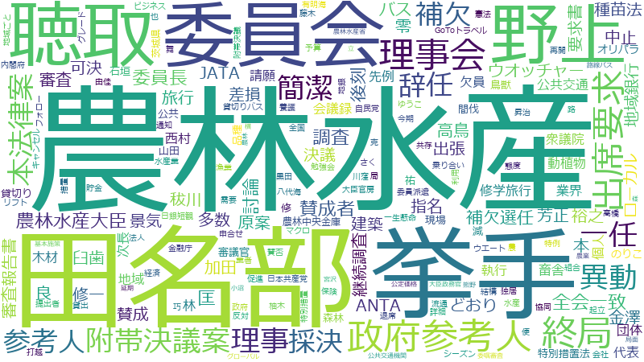

7<!DOCTYPE html>
<html lang="ja">
<head>
  <meta http-equiv="Content-Type" content="text/html; charset=UTF-8"/>
  <meta name="viewport" content="width=device-width, initial-scale=1, maximum-scale=1.0"/>
  <title>国会採掘 上月良祐議員（自由民主党）</title>

  <!-- CSS  -->
  <link href="https://fonts.googleapis.com/icon?family=Material+Icons" rel="stylesheet">
  <link href="../css/materialize.css" type="text/css" rel="stylesheet" media="screen,projection"/>
  <link href="../css/style.css" type="text/css" rel="stylesheet" media="screen,projection"/>
  <link href="../css/my.css" type="text/css" rel="stylesheet" media="screen,projection"/>
  
  <!-- Twitter Card -->
  
  <meta property="og:url" content="https://kokkaisaikutsu.github.io/giin/0a4e08676f825079.html" />
  <meta property="og:type" content="article" />
  <meta property="og:title" content="国会採掘 - 上月良祐 議員" />
  <meta property="og:description" content=" 上月良祐 議員（自由民主党）の国会議事録 採掘結果" />
  <meta property="og:site_name" content="国会採掘" />
  <meta property="og:image" content="https://kokkaisaikutsu.github.io/giin/wordcloud_0a4e08676f825079.png" />

  <meta name="twitter:card" content="summary_large_image" />
  <meta name="twitter:site" content="@kokkaisaikutsu" />
  <meta name="twitter:title" content="国会採掘 - 上月良祐議員" />
  <meta name="twitter:description" content=" 上月良祐議員（自由民主党）の国会議事録 採掘結果" />
  <meta name="twitter:image" content="https://kokkaisaikutsu.github.io/giin/wordcloud_0a4e08676f825079.png" />

  <meta property=”fb:app_id” content="2887131144935248">

  <script data-ad-client="ca-pub-2564514650616811" async src="https://pagead2.googlesyndication.com/pagead/js/adsbygoogle.js"></script>
  <!-- Global site tag (gtag.js) - Google Analytics -->
<script async src="https://www.googletagmanager.com/gtag/js?id=G-FCXXBJWHD5"></script>
<script>
  window.dataLayer = window.dataLayer || [];
  function gtag(){dataLayer.push(arguments);}
  gtag('js', new Date());

  gtag('config', 'G-FCXXBJWHD5');
</script>

</head>
<body>
  <nav class="indigo darken-3" role="navigation">
    <div class="nav-wrapper">
      <a href="../" class="brand-logo center hide-on-large-only"></a>
      <ul id="nav-mobile" class="blue darken-4 sidenav sidenav-fixed" style="width: 300px;">
        <li class="white-text">
          <div class="row">
            <div class="col s12 zero-margin padding-5"></div>

            <div class="col s12 zero-padding zero-margin center-align">
              <a href="../"></a>
            </div>

            <div class="col s12 m12 l12 zero-padding zero-margin">
              <ul class="collapsible">
                <li>
                  <div class="collapsible-header"><i class="small material-icons">pages</i>このサイトについて</div>
                  <div class="collapsible-body row blue darken-4 zero-margin zero-padding">
                    <div class="col s1">　</div>
                    <div class="col s10 blue darken-3 zero-margin zero-padding"><a href="../about.html">このサイトについて</a></div>
                    <div class="col s1">　</div>

                    <div class="col s1">　</div>
                    <div class="col s10 blue darken-3 zero-margin zero-padding"><a href="../about.html#contents">集計方法</a></div>
                    <div class="col s1">　</div>
                    
                    <div class="col s1">　</div>
                    <div class="col s10 blue darken-3 zero-margin zero-padding"><a href="../about.html#contact">管理者への連絡</a></div>                    
                    <div class="col s1">　</div>
                  </div>
                </li>

                <li>
                  <div class="collapsible-header"><i class="small material-icons">person</i>議員名</div>
                  <div class="collapsible-body">
                    <div class="row blue darken-4 zero-margin zero-padding">
                      <div class="col s1 blue darken-4 zero-padding zero-margin center-align"></div>
                      <div class="col s2 blue darken-3 zero-padding zero-margin center-align"><a href="../giin_aiueo_order.html">あ</a></div>
                      <div class="col s2 blue darken-3 zero-padding zero-margin center-align"><a href="../giin_aiueo_order.html#i">い</a></div>
                      <div class="col s2 blue darken-3 zero-padding zero-margin center-align"><a href="../giin_aiueo_order.html#u">う</a></div>
                      <div class="col s2 blue darken-3 zero-padding zero-margin center-align"><a href="../giin_aiueo_order.html#e">え</a></div>
                      <div class="col s2 blue darken-3 zero-padding zero-margin center-align"><a href="../giin_aiueo_order.html#o">お</a></div>
                      <div class="col s1 blue darken-4 zero-padding zero-margin center-align">　</div>
                      <div class="col s1 blue darken-4 zero-padding zero-margin center-align">　</div>
                      <div class="col s2 blue darken-3 zero-padding zero-margin center-align"><a href="../giin_aiueo_order.html#ka">か</a></div>
                      <div class="col s2 blue darken-3 zero-padding zero-margin center-align"><a href="../giin_aiueo_order.html#ki">き</a></div>
                      <div class="col s2 blue darken-3 zero-padding zero-margin center-align"><a href="../giin_aiueo_order.html#ku">く</a></div>
                      <div class="col s2 blue darken-3 zero-padding zero-margin center-align"><a href="../giin_aiueo_order.html#ke">け</a></div>
                      <div class="col s2 blue darken-3 zero-padding zero-margin center-align"><a href="../giin_aiueo_order.html#ko">こ</a></div>
                      <div class="col s1 blue darken-4 zero-padding zero-margin center-align">　</div>
                      <div class="col s1 blue darken-4 zero-padding zero-margin center-align">　</div>
                      <div class="col s2 blue darken-3 zero-padding zero-margin center-align"><a href="../giin_aiueo_order.html#sa">さ</a></div>
                      <div class="col s2 blue darken-3 zero-padding zero-margin center-align"><a href="../giin_aiueo_order.html#si">し</a></div>
                      <div class="col s2 blue darken-3 zero-padding zero-margin center-align"><a href="../giin_aiueo_order.html#su">す</a></div>
                      <div class="col s2 blue darken-3 zero-padding zero-margin center-align"><a href="../giin_aiueo_order.html#se">せ</a></div>
                      <div class="col s2 blue darken-3 zero-padding zero-margin center-align"><a href="../giin_aiueo_order.html#so">そ</a></div>
                      <div class="col s1 blue darken-4 zero-padding zero-margin center-align">　</div>
                      <div class="col s1 blue darken-4 zero-padding zero-margin center-align">　</div>
                      <div class="col s2 blue darken-3 zero-padding zero-margin center-align"><a href="../giin_aiueo_order.html#ta">た</a></div>
                      <div class="col s2 blue darken-3 zero-padding zero-margin center-align"><a href="../giin_aiueo_order.html#ti">ち</a></div>
                      <div class="col s2 blue darken-3 zero-padding zero-margin center-align"><a href="../giin_aiueo_order.html#tu">つ</a></div>
                      <div class="col s2 blue darken-3 zero-padding zero-margin center-align"><a href="../giin_aiueo_order.html#te">て</a></div>
                      <div class="col s2 blue darken-3 zero-padding zero-margin center-align"><a href="../giin_aiueo_order.html#to">と</a></div>
                      <div class="col s1 blue darken-4 zero-padding zero-margin center-align">　</div>
                      <div class="col s1 blue darken-4 zero-padding zero-margin center-align">　</div>
                      <div class="col s2 blue darken-3 zero-padding zero-margin center-align"><a href="../giin_aiueo_order.html#na">な</a></div>
                      <div class="col s2 blue darken-3 zero-padding zero-margin center-align"><a href="../giin_aiueo_order.html#ni">に</a></div>
                      <div class="col s2 blue darken-3 zero-padding zero-margin center-align"><a href="../giin_aiueo_order.html#nu">ぬ</a></div>
                      <div class="col s2 blue darken-3 zero-padding zero-margin center-align"><a href="../giin_aiueo_order.html#ne">ね</a></div>
                      <div class="col s2 blue darken-3 zero-padding zero-margin center-align"><a href="../giin_aiueo_order.html#no">の</a></div>
                      <div class="col s1 blue darken-4 zero-padding zero-margin center-align">　</div>
                      <div class="col s1 blue darken-4 zero-padding zero-margin center-align">　</div>
                      <div class="col s2 blue darken-3 zero-padding zero-margin center-align"><a href="../giin_aiueo_order.html#ha">は</a></div>
                      <div class="col s2 blue darken-3 zero-padding zero-margin center-align"><a href="../giin_aiueo_order.html#hi">ひ</a></div>
                      <div class="col s2 blue darken-3 zero-padding zero-margin center-align"><a href="../giin_aiueo_order.html#hu">ふ</a></div>
                      <div class="col s2 blue darken-3 zero-padding zero-margin center-align"><a href="../giin_aiueo_order.html#he">へ</a></div>
                      <div class="col s2 blue darken-3 zero-padding zero-margin center-align"><a href="../giin_aiueo_order.html#ho">ほ</a></div>
                      <div class="col s1 blue darken-4 zero-padding zero-margin center-align">　</div>
                      <div class="col s1 blue darken-4 zero-padding zero-margin center-align">　</div>
                      <div class="col s2 blue darken-3 zero-padding zero-margin center-align"><a href="../giin_aiueo_order.html#ma">ま</a></div>
                      <div class="col s2 blue darken-3 zero-padding zero-margin center-align"><a href="../giin_aiueo_order.html#mi">み</a></div>
                      <div class="col s2 blue darken-3 zero-padding zero-margin center-align"><a href="../giin_aiueo_order.html#mu">む</a></div>
                      <div class="col s2 blue darken-3 zero-padding zero-margin center-align"><a href="../giin_aiueo_order.html#me">め</a></div>
                      <div class="col s2 blue darken-3 zero-padding zero-margin center-align"><a href="../giin_aiueo_order.html#mo">も</a></div>
                      <div class="col s1 blue darken-4 zero-padding zero-margin center-align">　</div>
                      <div class="col s1 blue darken-4 zero-padding zero-margin center-align">　</div>
                      <div class="col s2 blue darken-3 zero-padding zero-margin center-align"><a href="../giin_aiueo_order.html#ya">や</a></div>
                      <div class="col s2 blue darken-3 zero-padding zero-margin center-align">　</div>
                      <div class="col s2 blue darken-3 zero-padding zero-margin center-align"><a href="../giin_aiueo_order.html#yu">ゆ</a></div>
                      <div class="col s2 blue darken-3 zero-padding zero-margin center-align">　</div>
                      <div class="col s2 blue darken-3 zero-padding zero-margin center-align"><a href="../giin_aiueo_order.html#yo">よ</a></div>
                      <div class="col s1 blue darken-4 zero-padding zero-margin center-align">　</div>
                      <div class="col s1 blue darken-4 zero-padding zero-margin center-align">　</div>
                      <div class="col s2 blue darken-3 zero-padding zero-margin center-align"><a href="../giin_aiueo_order.html#ra">ら</a></div>
                      <div class="col s2 blue darken-3 zero-padding zero-margin center-align"><a href="../giin_aiueo_order.html#ri">り</a></div>
                      <div class="col s2 blue darken-3 zero-padding zero-margin center-align"><a href="../giin_aiueo_order.html#ru">る</a></div>
                      <div class="col s2 blue darken-3 zero-padding zero-margin center-align"><a href="../giin_aiueo_order.html#re">れ</a></div>
                      <div class="col s2 blue darken-3 zero-padding zero-margin center-align"><a href="../giin_aiueo_order.html#ro">ろ</a></div>
                      <div class="col s1 blue darken-4 zero-padding zero-margin center-align">　</div>
                      <div class="col s1 blue darken-4 zero-padding zero-margin center-align">　</div>
                      <div class="col s2 blue darken-3 zero-padding zero-margin center-align"><a href="../giin_aiueo_order.html#wa">わ</a></div>
                    </div>
                  </div>
                </li>
                <li>
                  <div class="collapsible-header"><i class="small material-icons">group</i>所属政党</div>
                  <div class="blue darken-4 collapsible-body">
                    <div class="row zero-margin zero-padding">
                      <div class="col s1 blue darken-4">　</div>
                      <div class="col s5 blue darken-3 zero-padding center-align"><a href="../giin_party_order.html">自民</a></div>
                      <div class="col s5 blue darken-3 zero-padding center-align"><a href="../giin_party_order.html#cb7ab261116c3b4e5a51">立憲</a></div>
                      <div class="col s1 blue darken-4">　</div>
                      <div class="col s1 blue darken-4">　</div>
                      <div class="col s5 blue darken-3 zero-padding center-align"><a href="../giin_party_order.html#6c510e665a51">公明</a></div>
                      <div class="col s5 blue darken-3 zero-padding center-align"><a href="../giin_party_order.html#e5652c67715123755a51">共産</a></div>
                      <div class="col s1 blue darken-4">　</div>
                      <div class="col s1 blue darken-4">　</div>
                      <div class="col s5 blue darken-3 zero-padding center-align"><a href="../giin_party_order.html#e5652c67ad7db0656e301a4f">維新</a></div>
                      <div class="col s5 blue darken-3 zero-padding center-align"><a href="../giin_party_order.html#fd56116c116c3b4e5a51">国民</a></div>
                      <div class="col s1 blue darken-4">　</div>
                      <div class="col s1 blue darken-4">　</div>
                      <div class="col s5 blue darken-3 zero-padding center-align"><a href="../giin_party_order.html#others">その他</a></div>
                      <div class="col s5 blue darken-3 zero-padding center-align"><a href="../giin_party_order.html#217140625e5c">無所属</a></div>
                      <div class="col s1 blue darken-4">　</div>
                    </div>
                  </div>
                </li>
              </ul>        
            </div>
          </div>
        </li>        
      </ul>
      <a href="#" data-target="nav-mobile" class="sidenav-trigger"><i class="material-icons">menu</i></a>
    </div>
  </nav>


  <main>
    <div class="row">
      <div class="col s12 m12 l10 xl9 offset-l2 offset-xl2">
      
      <h1 class="card-panel small indigo darken-4 indigo-text text-lighten-5">上月良祐</h1>

      <div class="row">
        <div class="col s12 m12 l12 xl7">
          <div id="giin-wordcloud">
            
            
          </div>
        </div>    
        <div class="col s12 m8 l8 xl5 offset-m2 offset-l2">

          <div class="row indigo lighten-5 valign-wrapper margin-1 padding-5">
            <div class="col s2 m1 l1 xl2">
              <i class="material-icons center-align">spellcheck</i>
            </div>
            <div class="col s4 m4 l4 xl4">よみがな</div>
            <div class="col s6 m7 l7 xl6">
              
              こうづきりょうすけ
            </div>            
          </div>
          
          <div class="row margin-3"></div>

          <div class="row indigo lighten-5 valign-wrapper margin-1 padding-5">
            <div class="col s2 m1 l1 xl2">
              <i class="material-icons center-align">comment</i>
            </div>
            <div class="col s4 m4 l4 xl4">発言日数</div>
            <div class="col s6 m7 l7 xl6">
              
              41日
            </div>            
          </div>

          <div class="row margin-3"></div>

          <div class="row indigo lighten-5 valign-wrapper margin-1 padding-5">
            <div class="col s2 m1 l1 xl2">
              <i class="material-icons center-align">weekend</i>
            </div>
            <div class="col s4 m4 l4 xl4">役職</div>
            <div class="col s6 m7 l7 xl6">
              
              こうつきりょうすけ
            </div>            
          </div>

          <div class="row margin-3"></div>

          <div class="row indigo lighten-5 valign-wrapper margin-1 padding-5">
            <div class="col s2 m1 l1 xl2">
              <i class="material-icons center-align">group</i>
            </div>
            <div class="col s4 m4 l4 xl4">政党</div>
            <div class="col s6 m7 l7 xl6">
              
              自由民主党
            </div>            
          </div>
                    
          <div class="row margin-3"></div>

          <div class="row indigo lighten-5 valign-wrapper margin-1 padding-5">
            <div class="col s2 m1 l1 xl2">
              <i class="material-icons center-align">account_balance</i>
            </div>
            <div class="col s4 m4 l4 xl4">議院</div>
            <div class="col s6 m7 l7 xl6">
              
              
            </div>
          </div>

          <div class="row indigo lighten-5 valign-wrapper margin-1 padding-5">
            <div class="col s2 m1 l1 xl2">
              <i class="material-icons center-align">people_outline</i>
            </div>
            <div class="col s4 m4 l4 xl4">院内会派</div>
            <div class="col s6 m7 l7 xl6">
              
              自由民主党・国民の声
            </div>
          </div>

          <div class="row indigo lighten-5 valign-wrapper margin-1 padding-5">
            <div class="col s2 m1 l1 xl2">
              <i class="material-icons center-align">place</i>
            </div>
            <div class="col s4 m4 l4 xl4">当選選挙区</div>
            <div class="col s6 m7 l7 xl6">
              
              茨城
            </div>
          </div>

          <div class="row indigo lighten-5 valign-wrapper margin-1 padding-5">
            <div class="col s2 m1 l1 xl2">
              <i class="material-icons center-align">loop</i>
            </div>
            <div class="col s4 m4 l4 xl4">当選回数</div>
            <div class="col s6 m7 l7 xl6">
              
              2回
            </div>
          </div>

        </div>      
      </div>
  
  <class class="row">
    <div class="col s12 m12 l10 offset-l1">
      <ul class="tabs">
        <li class="tab col s12 l4"><a href="#frequency_words">頻出語</a></li>
        <li class="tab col s12 l4"><a href="#feature_words">特徴語</a></li>
      </ul>
    </div>
    <div id="frequency_words" class="col s12 m12 l10 offset-l1 cyan lighten-5 height-min100">
      <p class="flow-text">
、<a class="modal-trigger" href="#0a4e08676f825079_30750d54e890" id="0a4e08676f825079_30750d54e890_link">田名部</a>

      </p>
    </div>
    <div id="feature_words" class="col s12 m12 l10 offset-l1 cyan lighten-5 height-min100">
      <p class="flow-text">
、<a class="modal-trigger" href="#0a4e08676f825079_30750d54e890" id="0a4e08676f825079_30750d54e890_link">田名部</a>

      </p>
    </div>

<div id="0a4e08676f825079_30750d54e890" class="modal modal-fixed-footer">
 <div class="modal-content">
  <h4 class="card-panel blue darken-3 white-text">田名部</h4>
  <table class="highlight">
   <tbody>
    <tr>
     <td>言及回数</td>
     <td>38回</td>
    </tr>
    <tr>
     <td>言及発言者数（参考人を含む）</td>
     <td>29人</td>
    </tr>
    <tr>
     <td>0a4e08676f825079</td>
     <td>30750d54e890</td>
    </tr>
   </tbody>
  </table>
  <span id="0a4e08676f825079_30750d54e890_text"></span> </div> <div class="modal-footer">  <a class="modal-close waves-effect waves-green btn-flat">閉じる</a> </div></div>
    </class>
    </div>
    </div>
  </main>


  <footer class="page-footer indigo darken-3 zero-margin padding-5">
    <div class="row">
      <div class="col s12 m12 l8 xl8 offset-l4 offset-xl3">
        <ul>
          <li>
            本サイトは 国立国会図書館 <a class="grey-text text-lighten-3" href="https://kokkai.ndl.go.jp/#/">国会議事録検索システム</a> を通じて収集したデータを使用しています。
          </li>
          <li>
            本サイトのデータは単語の使用回数を議事録から機械的に抽出したものであり、該当の単語に関する発言者の主張・賛否、発言の根拠、発言の妥当性を示すものではありません。
          </li>
        </ul>
      </div>
    </div>
  </footer>


  <!--  Scripts-->
  <script src="https://code.jquery.com/jquery-3.2.1.min.js"></script>
  <script src="../js/materialize.js"></script>
  <script src="../js/materialize.min.js"></script>
  <script src="../js/init.js"></script>
  <script src="../js/my.js"></script>
  <script type="text/javascript">
    const date_title = "<h5 class=\"card-panel white padding-5\">$date$<a href=\"$date_url$\">  <i class =\"material-icons right\">account_balance</i> </a></h5>"
    const remark_html = "<p>$remark$</p>"
    const devider = "<div class=\"divider\"></div>"

    const target_giin = "0a4e08676f825079"

      $("#0a4e08676f825079_ee5d0d64_link").click(function() {
        target_word = "ee5d0d64" 
        target_word_plain = "差損" 
        show_modal(target_giin, target_word, target_word_plain)
      }) 

      $("#0a4e08676f825079_aa30ea30d130e930_link").click(function() {
        target_word = "aa30ea30d130e930" 
        target_word_plain = "オリパラ" 
        show_modal(target_giin, target_word, target_word_plain)
      }) 

      $("#0a4e08676f825079_ed30fc30ab30eb30_link").click(function() {
        target_word = "ed30fc30ab30eb30" 
        target_word_plain = "ローカル" 
        show_modal(target_giin, target_word, target_word_plain)
      }) 

      $("#0a4e08676f825079_3057df57_link").click(function() {
        target_word = "3057df57" 
        target_word_plain = "地域" 
        show_modal(target_giin, target_word, target_word_plain)
      }) 

      $("#0a4e08676f825079_e179dd5d_link").click(function() {
        target_word = "e179dd5d" 
        target_word_plain = "秡川" 
        show_modal(target_giin, target_word, target_word_plain)
      }) 

      $("#0a4e08676f825079_b28f9767346c2375_link").click(function() {
        target_word = "b28f9767346c2375" 
        target_word_plain = "農林水産" 
        show_modal(target_giin, target_word, target_word_plain)
      }) 

      $("#0a4e08676f825079_9e8ffb4e_link").click(function() {
        target_word = "9e8ffb4e" 
        target_word_plain = "辞任" 
        show_modal(target_giin, target_word, target_word_plain)
      }) 

      $("#0a4e08676f825079_e95b708b985b_link").click(function() {
        target_word = "e95b708b985b" 
        target_word_plain = "審議官" 
        show_modal(target_giin, target_word, target_word_plain)
      }) 

      $("#0a4e08676f825079_28675067_link").click(function() {
        target_word = "28675067" 
        target_word_plain = "木材" 
        show_modal(target_giin, target_word, target_word_plain)
      }) 

      $("#0a4e08676f825079_997d9a7dbf8afb67_link").click(function() {
        target_word = "997d9a7dbf8afb67" 
        target_word_plain = "継続調査" 
        show_modal(target_giin, target_word, target_word_plain)
      }) 

      $("#0a4e08676f825079_6851fd56_link").click(function() {
        target_word = "6851fd56" 
        target_word_plain = "全国" 
        show_modal(target_giin, target_word, target_word_plain)
      }) 

      $("#0a4e08676f825079_884e977b_link").click(function() {
        target_word = "884e977b" 
        target_word_plain = "予算" 
        show_modal(target_giin, target_word, target_word_plain)
      }) 

      $("#0a4e08676f825079_a630aa30c330c130e330fc30_link").click(function() {
        target_word = "a630aa30c330c130e330fc30" 
        target_word_plain = "ウオッチャー" 
        show_modal(target_giin, target_word, target_word_plain)
      }) 

      $("#0a4e08676f825079_3057df5780924c88_link").click(function() {
        target_word = "3057df5780924c88" 
        target_word_plain = "地域銀行" 
        show_modal(target_giin, target_word, target_word_plain)
      }) 

      $("#0a4e08676f825079_db8c10620580_link").click(function() {
        target_word = "db8c10620580" 
        target_word_plain = "賛成者" 
        show_modal(target_giin, target_word, target_word_plain)
      }) 

      $("#0a4e08676f825079_ee689767_link").click(function() {
        target_word = "ee689767" 
        target_word_plain = "森林" 
        show_modal(target_giin, target_word, target_word_plain)
      }) 

      $("#0a4e08676f825079_2d4e626b_link").click(function() {
        target_word = "2d4e626b" 
        target_word_plain = "中止" 
        show_modal(target_giin, target_word, target_word_plain)
      }) 

      $("#0a4e08676f825079_9f534868_link").click(function() {
        target_word = "9f534868" 
        target_word_plain = "原案" 
        show_modal(target_giin, target_word, target_word_plain)
      }) 

      $("#0a4e08676f825079_e356534f_link").click(function() {
        target_word = "e356534f" 
        target_word_plain = "団体" 
        show_modal(target_giin, target_word, target_word_plain)
      }) 

      $("#0a4e08676f825079_d5884b4e_link").click(function() {
        target_word = "d5884b4e" 
        target_word_plain = "裕之" 
        show_modal(target_giin, target_word, target_word_plain)
      }) 

      $("#0a4e08676f825079_ee4f665bc5654c88_link").click(function() {
        target_word = "ee4f665bc5654c88" 
        target_word_plain = "修学旅行" 
        show_modal(target_giin, target_word, target_word_plain)
      }) 

      $("#0a4e08676f825079_48518b4f_link").click(function() {
        target_word = "48518b4f" 
        target_word_plain = "先例" 
        show_modal(target_giin, target_word, target_word_plain)
      }) 

      $("#0a4e08676f825079_79728b4f_link").click(function() {
        target_word = "79728b4f" 
        target_word_plain = "特例" 
        show_modal(target_giin, target_word, target_word_plain)
      }) 

      $("#0a4e08676f825079_217c546f_link").click(function() {
        target_word = "217c546f" 
        target_word_plain = "簡潔" 
        show_modal(target_giin, target_word, target_word_plain)
      }) 

      $("#0a4e08676f825079_6f66176c_link").click(function() {
        target_word = "6f66176c" 
        target_word_plain = "景気" 
        show_modal(target_giin, target_word, target_word_plain)
      }) 

      $("#0a4e08676f825079_206be154_link").click(function() {
        target_word = "206be154" 
        target_word_plain = "欠員" 
        show_modal(target_giin, target_word, target_word_plain)
      }) 

      $("#0a4e08676f825079_1a90e577_link").click(function() {
        target_word = "1a90e577" 
        target_word_plain = "通知" 
        show_modal(target_giin, target_word, target_word_plain)
      }) 

      $("#0a4e08676f825079_4c7d086e_link").click(function() {
        target_word = "4c7d086e" 
        target_word_plain = "経済" 
        show_modal(target_giin, target_word, target_word_plain)
      }) 

      $("#0a4e08676f825079_44962f5e7a6c708b4868_link").click(function() {
        target_word = "44962f5e7a6c708b4868" 
        target_word_plain = "附帯決議案" 
        show_modal(target_giin, target_word, target_word_plain)
      }) 

      $("#0a4e08676f825079_7075d552_link").click(function() {
        target_word = "7075d552" 
        target_word_plain = "異動" 
        show_modal(target_giin, target_word, target_word_plain)
      }) 

      $("#0a4e08676f825079_fe733458_link").click(function() {
        target_word = "fe733458" 
        target_word_plain = "現場" 
        show_modal(target_giin, target_word, target_word_plain)
      }) 

      $("#0a4e08676f825079_1a4f3e79_link").click(function() {
        target_word = "1a4f3e79" 
        target_word_plain = "会社" 
        show_modal(target_giin, target_word, target_word_plain)
      }) 

      $("#0a4e08676f825079_c1542e7a_link").click(function() {
        target_word = "c1542e7a" 
        target_word_plain = "品種" 
        show_modal(target_giin, target_word, target_word_plain)
      }) 

      $("#0a4e08676f825079_aa636e7f_link").click(function() {
        target_word = "aa636e7f" 
        target_word_plain = "措置" 
        show_modal(target_giin, target_word, target_word_plain)
      }) 

      $("#0a4e08676f825079_1b6e_link").click(function() {
        target_word = "1b6e" 
        target_word_plain = "減" 
        show_modal(target_giin, target_word, target_word_plain)
      }) 

      $("#0a4e08676f825079_f696_link").click(function() {
        target_word = "f696" 
        target_word_plain = "零" 
        show_modal(target_giin, target_word, target_word_plain)
      }) 

      $("#0a4e08676f825079_507dcb69_link").click(function() {
        target_word = "507dcb69" 
        target_word_plain = "結構" 
        show_modal(target_giin, target_word, target_word_plain)
      }) 

      $("#0a4e08676f825079_ee4f_link").click(function() {
        target_word = "ee4f" 
        target_word_plain = "修" 
        show_modal(target_giin, target_word, target_word_plain)
      }) 

      $("#0a4e08676f825079_e44e8c54_link").click(function() {
        target_word = "e44e8c54" 
        target_word_plain = "令和" 
        show_modal(target_giin, target_word, target_word_plain)
      }) 

      $("#0a4e08676f825079_5079_link").click(function() {
        target_word = "5079" 
        target_word_plain = "祐" 
        show_modal(target_giin, target_word, target_word_plain)
      }) 

      $("#0a4e08676f825079_79722552aa636e7fd56c_link").click(function() {
        target_word = "79722552aa636e7fd56c" 
        target_word_plain = "特別措置法" 
        show_modal(target_giin, target_word, target_word_plain)
      }) 

      $("#0a4e08676f825079_1a4f708b3293_link").click(function() {
        target_word = "1a4f708b3293" 
        target_word_plain = "会議録" 
        show_modal(target_giin, target_word, target_word_plain)
      }) 

      $("#0a4e08676f825079_c34f3290_link").click(function() {
        target_word = "c34f3290" 
        target_word_plain = "促進" 
        show_modal(target_giin, target_word, target_word_plain)
      }) 

      $("#0a4e08676f825079_d56cba4e_link").click(function() {
        target_word = "d56cba4e" 
        target_word_plain = "法人" 
        show_modal(target_giin, target_word, target_word_plain)
      }) 

      $("#0a4e08676f825079_0e8ad68a_link").click(function() {
        target_word = "0e8ad68a" 
        target_word_plain = "討論" 
        show_modal(target_giin, target_word, target_word_plain)
      }) 

      $("#0a4e08676f825079_6f82_link").click(function() {
        target_word = "6f82" 
        target_word_plain = "良" 
        show_modal(target_giin, target_word, target_word_plain)
      }) 

      $("#0a4e08676f825079_fa512d5e8189426c_link").click(function() {
        target_word = "fa512d5e8189426c" 
        target_word_plain = "出席要求" 
        show_modal(target_giin, target_word, target_word_plain)
      }) 

      $("#0a4e08676f825079_8551a3959c5e_link").click(function() {
        target_word = "8551a3959c5e" 
        target_word_plain = "内閣府" 
        show_modal(target_giin, target_word, target_word_plain)
      }) 

      $("#0a4e08676f825079_1a597065_link").click(function() {
        target_word = "1a597065" 
        target_word_plain = "多数" 
        show_modal(target_giin, target_word, target_word_plain)
      }) 

      $("#0a4e08676f825079_ce910a4e_link").click(function() {
        target_word = "ce910a4e" 
        target_word_plain = "野上" 
        show_modal(target_giin, target_word, target_word_plain)
      }) 

      $("#0a4e08676f825079_b28f9767346c23752759e381_link").click(function() {
        target_word = "b28f9767346c23752759e381" 
        target_word_plain = "農林水産大臣" 
        show_modal(target_giin, target_word, target_word_plain)
      }) 

      $("#0a4e08676f825079_7a6c708b_link").click(function() {
        target_word = "7a6c708b" 
        target_word_plain = "決議" 
        show_modal(target_giin, target_word, target_word_plain)
      }) 

      $("#0a4e08676f825079_9395104f_link").click(function() {
        target_word = "9395104f" 
        target_word_plain = "間伐" 
        show_modal(target_giin, target_word, target_word_plain)
      }) 

      $("#0a4e08676f825079_d330b830cd30b930_link").click(function() {
        target_word = "d330b830cd30b930" 
        target_word_plain = "ビジネス" 
        show_modal(target_giin, target_word, target_word_plain)
      }) 

      $("#0a4e08676f825079_06748b4e_link").click(function() {
        target_word = "06748b4e" 
        target_word_plain = "理事" 
        show_modal(target_giin, target_word, target_word_plain)
      }) 

      $("#0a4e08676f825079_29522875_link").click(function() {
        target_word = "29522875" 
        target_word_plain = "利用" 
        show_modal(target_giin, target_word, target_word_plain)
      }) 

      $("#0a4e08676f825079_cb8a5898_link").click(function() {
        target_word = "cb8a5898" 
        target_word_plain = "請願" 
        show_modal(target_giin, target_word, target_word_plain)
      }) 

      $("#0a4e08676f825079_dc88206b_link").click(function() {
        target_word = "dc88206b" 
        target_word_plain = "補欠" 
        show_modal(target_giin, target_word, target_word_plain)
      }) 

      $("#0a4e08676f825079_4688708b6296_link").click(function() {
        target_word = "4688708b6296" 
        target_word_plain = "衆議院" 
        show_modal(target_giin, target_word, target_word_plain)
      }) 

      $("#0a4e08676f825079_2c67d56c8b5f4868_link").click(function() {
        target_word = "2c67d56c8b5f4868" 
        target_word_plain = "本法律案" 
        show_modal(target_giin, target_word, target_word_plain)
      }) 

      $("#0a4e08676f825079_ee4f004e_link").click(function() {
        target_word = "ee4f004e" 
        target_word_plain = "修一" 
        show_modal(target_giin, target_word, target_word_plain)
      }) 

      $("#0a4e08676f825079_427d405c_link").click(function() {
        target_word = "427d405c" 
        target_word_plain = "終局" 
        show_modal(target_giin, target_word, target_word_plain)
      }) 

      $("#0a4e08676f825079_68511a4f004ef481_link").click(function() {
        target_word = "68511a4f004ef481" 
        target_word_plain = "全会一致" 
        show_modal(target_giin, target_word, target_word_plain)
      }) 

      $("#0a4e08676f825079_5f6aa295_link").click(function() {
        target_word = "5f6aa295" 
        target_word_plain = "機関" 
        show_modal(target_giin, target_word, target_word_plain)
      }) 

      $("#0a4e08676f825079_004e1f75f8617d54_link").click(function() {
        target_word = "004e1f75f8617d54" 
        target_word_plain = "一生懸命" 
        show_modal(target_giin, target_word, target_word_plain)
      }) 

      $("#0a4e08676f825079_e59c6373_link").click(function() {
        target_word = "e59c6373" 
        target_word_plain = "鳥獣" 
        show_modal(target_giin, target_word, target_word_plain)
      }) 

      $("#0a4e08676f825079_bf8afb67_link").click(function() {
        target_word = "bf8afb67" 
        target_word_plain = "調査" 
        show_modal(target_giin, target_word, target_word_plain)
      }) 

      $("#0a4e08676f825079_fa51355f_link").click(function() {
        target_word = "fa51355f" 
        target_word_plain = "出張" 
        show_modal(target_giin, target_word, target_word_plain)
      }) 

      $("#0a4e08676f825079_0b50ba4e_link").click(function() {
        target_word = "0b50ba4e" 
        target_word_plain = "個人" 
        show_modal(target_giin, target_word, target_word_plain)
      }) 

      $("#0a4e08676f825079_d5520d696972_link").click(function() {
        target_word = "d5520d696972" 
        target_word_plain = "動植物" 
        show_modal(target_giin, target_word, target_word_plain)
      }) 

      $("#0a4e08676f825079_a1637a6c_link").click(function() {
        target_word = "a1637a6c" 
        target_word_plain = "採決" 
        show_modal(target_giin, target_word, target_word_plain)
      }) 

      $("#0a4e08676f825079_fc816f6b_link").click(function() {
        target_word = "fc816f6b" 
        target_word_plain = "臼歯" 
        show_modal(target_giin, target_word, target_word_plain)
      }) 

      $("#0a4e08676f825079_c5654c88_link").click(function() {
        target_word = "c5654c88" 
        target_word_plain = "旅行" 
        show_modal(target_giin, target_word, target_word_plain)
      }) 

      $("#0a4e08676f825079_2e7ad782d56c_link").click(function() {
        target_word = "2e7ad782d56c" 
        target_word_plain = "種苗法" 
        show_modal(target_giin, target_word, target_word_plain)
      }) 

      $("#0a4e08676f825079_4a00410054004100_link").click(function() {
        target_word = "4a00410054004100" 
        target_word_plain = "JATA" 
        show_modal(target_giin, target_word, target_word_plain)
      }) 

      $("#0a4e08676f825079_a0523075_link").click(function() {
        target_word = "a0523075" 
        target_word_plain = "加田" 
        show_modal(target_giin, target_word, target_word_plain)
      }) 

      $("#0a4e08676f825079_7480d653_link").click(function() {
        target_word = "7480d653" 
        target_word_plain = "聴取" 
        show_modal(target_giin, target_word, target_word_plain)
      }) 

      $("#0a4e08676f825079_ef537a6c_link").click(function() {
        target_word = "ef537a6c" 
        target_word_plain = "可決" 
        show_modal(target_giin, target_word, target_word_plain)
      }) 

      $("#0a4e08676f825079_3f659c5ec2530380ba4e_link").click(function() {
        target_word = "3f659c5ec2530380ba4e" 
        target_word_plain = "政府参考人" 
        show_modal(target_giin, target_word, target_word_plain)
      }) 

      $("#0a4e08676f825079_004efb4e_link").click(function() {
        target_word = "004efb4e" 
        target_word_plain = "一任" 
        show_modal(target_giin, target_word, target_word_plain)
      }) 

      $("#0a4e08676f825079_6c517151_link").click(function() {
        target_word = "6c517151" 
        target_word_plain = "公共" 
        show_modal(target_giin, target_word, target_word_plain)
      }) 

      $("#0a4e08676f825079_dc88206b7890fb4e_link").click(function() {
        target_word = "dc88206b7890fb4e" 
        target_word_plain = "補欠選任" 
        show_modal(target_giin, target_word, target_word_plain)
      }) 

      $("#0a4e08676f825079_2c67_link").click(function() {
        target_word = "2c67" 
        target_word_plain = "本" 
        show_modal(target_giin, target_word, target_word_plain)
      }) 

      $("#0a4e08676f825079_69304a308a30_link").click(function() {
        target_word = "69304a308a30" 
        target_word_plain = "どおり" 
        show_modal(target_giin, target_word, target_word_plain)
      }) 

      $("#0a4e08676f825079_f377a357_link").click(function() {
        target_word = "f377a357" 
        target_word_plain = "石垣" 
        show_modal(target_giin, target_word, target_word_plain)
      }) 

      $("#0a4e08676f825079_8189426cf866_link").click(function() {
        target_word = "8189426cf866" 
        target_word_plain = "要求書" 
        show_modal(target_giin, target_word, target_word_plain)
      }) 

      $("#0a4e08676f825079_7f895167_link").click(function() {
        target_word = "7f895167" 
        target_word_plain = "西村" 
        show_modal(target_giin, target_word, target_word_plain)
      }) 

      $("#0a4e08676f825079_00978189_link").click(function() {
        target_word = "00978189" 
        target_word_plain = "需要" 
        show_modal(target_giin, target_word, target_word_plain)
      }) 

      $("#0a4e08676f825079_db8c1062_link").click(function() {
        target_word = "db8c1062" 
        target_word_plain = "賛成" 
        show_modal(target_giin, target_word, target_word_plain)
      }) 

      $("#0a4e08676f825079_fa5ec97b_link").click(function() {
        target_word = "fa5ec97b" 
        target_word_plain = "建築" 
        show_modal(target_giin, target_word, target_word_plain)
      }) 

      $("#0a4e08676f825079_216b7795_link").click(function() {
        target_word = "216b7795" 
        target_word_plain = "次長" 
        show_modal(target_giin, target_word, target_word_plain)
      }) 

      $("#0a4e08676f825079_e34e6888_link").click(function() {
        target_word = "e34e6888" 
        target_word_plain = "代表" 
        show_modal(target_giin, target_word, target_word_plain)
      }) 

      $("#0a4e08676f825079_06748b4e1a4f_link").click(function() {
        target_word = "06748b4e1a4f" 
        target_word_plain = "理事会" 
        show_modal(target_giin, target_word, target_word_plain)
      }) 

      $("#0a4e08676f825079_6c517151a44e1a90_link").click(function() {
        target_word = "6c517151a44e1a90" 
        target_word_plain = "公共交通" 
        show_modal(target_giin, target_word, target_word_plain)
      }) 

      $("#0a4e08676f825079_715c3075_link").click(function() {
        target_word = "715c3075" 
        target_word_plain = "山田" 
        show_modal(target_giin, target_word, target_word_plain)
      }) 

      $("#0a4e08676f825079_8d518b95_link").click(function() {
        target_word = "8d518b95" 
        target_word_plain = "再開" 
        show_modal(target_giin, target_word, target_word_plain)
      }) 

      $("#0a4e08676f825079_b382636b_link").click(function() {
        target_word = "b382636b" 
        target_word_plain = "芳正" 
        show_modal(target_giin, target_word, target_word_plain)
      }) 

      $("#0a4e08676f825079_6d694c75_link").click(function() {
        target_word = "6d694c75" 
        target_word_plain = "業界" 
        show_modal(target_giin, target_word, target_word_plain)
      }) 

      $("#0a4e08676f825079_f7574c88_link").click(function() {
        target_word = "f7574c88" 
        target_word_plain = "執行" 
        show_modal(target_giin, target_word, target_word_plain)
      }) 

      $("#0a4e08676f825079_738a307d_link").click(function() {
        target_word = "738a307d" 
        target_word_plain = "詳細" 
        show_modal(target_giin, target_word, target_word_plain)
      }) 

      $("#0a4e08676f825079_9767_link").click(function() {
        target_word = "9767" 
        target_word_plain = "林" 
        show_modal(target_giin, target_word, target_word_plain)
      }) 

      $("#0a4e08676f825079_d459e1541a4f_link").click(function() {
        target_word = "d459e1541a4f" 
        target_word_plain = "委員会" 
        show_modal(target_giin, target_word, target_word_plain)
      }) 

      $("#0a4e08676f825079_19634b62_link").click(function() {
        target_word = "19634b62" 
        target_word_plain = "挙手" 
        show_modal(target_giin, target_word, target_word_plain)
      }) 

      $("#0a4e08676f825079_30750d54e890_link").click(function() {
        target_word = "30750d54e890" 
        target_word_plain = "田名部" 
        show_modal(target_giin, target_word, target_word_plain)
      }) 

      $("#0a4e08676f825079_8c5f3b52_link").click(function() {
        target_word = "8c5f3b52" 
        target_word_plain = "後刻" 
        show_modal(target_giin, target_word, target_word_plain)
      }) 

      $("#0a4e08676f825079_d191a46f_link").click(function() {
        target_word = "d191a46f" 
        target_word_plain = "金澤" 
        show_modal(target_giin, target_word, target_word_plain)
      }) 

      $("#0a4e08676f825079_6e308a305330_link").click(function() {
        target_word = "6e308a305330" 
        target_word_plain = "のりこ" 
        show_modal(target_giin, target_word, target_word_plain)
      }) 

      $("#0a4e08676f825079_8b4e6d69_link").click(function() {
        target_word = "8b4e6d69" 
        target_word_plain = "事業" 
        show_modal(target_giin, target_word, target_word_plain)
      }) 

      $("#0a4e08676f825079_e95bfb67_link").click(function() {
        target_word = "e95bfb67" 
        target_word_plain = "審査" 
        show_modal(target_giin, target_word, target_word_plain)
      }) 

      $("#0a4e08676f825079_3f659c5e_link").click(function() {
        target_word = "3f659c5e" 
        target_word_plain = "政府" 
        show_modal(target_giin, target_word, target_word_plain)
      }) 

      $("#0a4e08676f825079_b28f97672d4e2e59d191ab5e_link").click(function() {
        target_word = "b28f97672d4e2e59d191ab5e" 
        target_word_plain = "農林中央金庫" 
        show_modal(target_giin, target_word, target_word_plain)
      }) 

      $("#0a4e08676f825079_d89ae59c_link").click(function() {
        target_word = "d89ae59c" 
        target_word_plain = "高鳥" 
        show_modal(target_giin, target_word, target_word_plain)
      }) 

      $("#0a4e08676f825079_07630d54_link").click(function() {
        target_word = "07630d54" 
        target_word_plain = "指名" 
        show_modal(target_giin, target_word, target_word_plain)
      }) 

      $("#0a4e08676f825079_b88c07528a30_link").click(function() {
        target_word = "b88c07528a30" 
        target_word_plain = "貸切り" 
        show_modal(target_giin, target_word, target_word_plain)
      }) 

      $("#0a4e08676f825079_41004e0054004100_link").click(function() {
        target_word = "41004e0054004100" 
        target_word_plain = "ANTA" 
        show_modal(target_giin, target_word, target_word_plain)
      }) 

      $("#0a4e08676f825079_d459e1547795_link").click(function() {
        target_word = "d459e1547795" 
        target_word_plain = "委員長" 
        show_modal(target_giin, target_word, target_word_plain)
      }) 

      $("#0a4e08676f825079_d030b930_link").click(function() {
        target_word = "d030b930" 
        target_word_plain = "バス" 
        show_modal(target_giin, target_word, target_word_plain)
      }) 

      $("#0a4e08676f825079_2153_link").click(function() {
        target_word = "2153" 
        target_word_plain = "匡" 
        show_modal(target_giin, target_word, target_word_plain)
      }) 

      $("#0a4e08676f825079_5c750e82_link").click(function() {
        target_word = "5c750e82" 
        target_word_plain = "畜舎" 
        show_modal(target_giin, target_word, target_word_plain)
      }) 

      $("#0a4e08676f825079_e95bfb6731584a54f866_link").click(function() {
        target_word = "e95bfb6731584a54f866" 
        target_word_plain = "審査報告書" 
        show_modal(target_giin, target_word, target_word_plain)
      }) 

      $("#0a4e08676f825079_c2530380ba4e_link").click(function() {
        target_word = "c2530380ba4e" 
        target_word_plain = "参考人" 
        show_modal(target_giin, target_word, target_word_plain)
      }) 


  function show_modal(giin, word, word_plain, post_fix) {
      $.ajax({
        url: "../js/" + giin + "/" + giin + "_" + word + ".json",
        type: "GET",
        datatype: "json",
        success: function (data) {
          const data_stringify = JSON.stringify(data);
          const data_json = JSON.parse(data_stringify);

          let modal_body_html = ""

          data_json.forEach(date_elm => {
            modal_body_html += date_title.replace("$date$", date_elm["date"])
            date_elm["meeting"].forEach(meeting_elm => {
              meeting_elm["remarks"].forEach(remark_elm => {
                if (remark_elm["sentence"].length == 0) {
                  return;
                }
                remark_elm["sentence"].forEach(sentence_elm => {
                  modal_body_html += remark_html.replace(
                    "$remark$", 
                    sentence_elm.replace(
                      word_plain, 
                      "<span style=\"font-weight: bolder;\">" + word_plain + "</span>"                      
                    )
                  )
                  modal_body_html += devider
                })
              })
            })
          });

          $("#" + target_giin + "_" + target_word + "_" + post_fix + "_text").html(
            modal_body_html
          )
        },
        error: function(xhr, textStatus, errorThrown){
          alert('Error! ' + textStatus + ' ' + errorThrown + ' ' + giin + '_' + word);
        }
      })
    }
  </script>

  </body>
</html>


